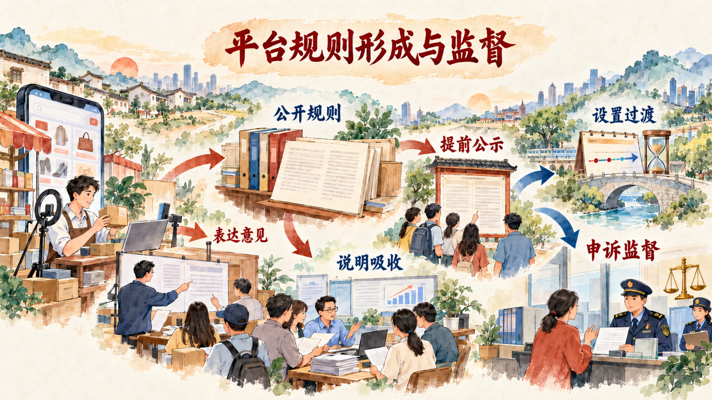

一套法治体系怎样把纸面规则转化为治理能力
有了法律，法治建设才有规范基础；法律得到有效实施、公共权力受到监督、专业队伍和公共服务提供保障、党内法规发挥规范作用，纸面规则才能转化为治理能力。本节从总抓手进入宪法实施，再以平台规则形成过程观察五大体系怎样协同运行。
一、中国特色社会主义法治体系是全面推进依法治国的总抓手
中国特色社会主义法治体系由完备的法律规范体系、高效的法治实施体系、严密的法治监督体系、有力的法治保障体系和完善的党内法规体系构成。五个体系不是五张彼此独立的清单，而是从规则形成、规则实施、权力监督、条件保障和党内治理等方面共同组织法治运行。
法律规范体系明确社会成员和国家机关的权利义务；法治实施体系使立法、执法、司法、守法各环节有效衔接；法治监督体系对权力运行进行制约；法治保障体系提供政治、组织、队伍、人才、科技和信息化等条件；党内法规体系推进党的领导和党的建设制度化规范化。
建设法治体系的价值，在于把单项法律、具体机构和分散程序组织成协调统一的整体。面对平台收费规则这样的新问题，既需要制定公共规则，也需要平台执行、监管机关监督、商家和消费者依法申诉，还需要历史版本、电子记录和专业人员提供保障。
参考资料｜从“法律体系”到“法治体系”：为什么有法可依只是起点
法律体系着重回答国家有哪些法律规范、不同法律部门怎样构成统一整体。法治体系进一步回答这些规范怎样制定和实施，权力怎样受到监督，法治运行需要哪些保障，执政党怎样依据党内法规管党治党。
以网络交易平台修改收费规则为例，法律规范规定平台经营者的义务以及商家、消费者的权利；实施体系把公示、征求意见、设置过渡期和受理申诉转化为日常流程；监督体系使市场监管、社会监督和内部合规能够检查规则是否落实；保障体系提供监管人员、技术存证、检索工具和公共法律服务；党内法规体系规范承担相关领导和管理职责的党组织及党员干部履职行为。
五个体系围绕同一治理问题分工协作。学生分析现实问题时，可以依次追问：规则是否完备，执行是否顺畅，权力是否受到监督，人员和技术是否具备，领导责任是否落实。这样能够从“有没有一条法律”进入“法治能否稳定运行”。
资料来源：中共中央关于全面推进依法治国若干重大问题的决定；《习近平新时代中国特色社会主义思想概论》第九章。
二、坚持依宪治国、依宪执政
宪法是国家的根本法，是治国安邦的总章程，具有最高法律地位、法律权威和法律效力。坚持依法治国首先要坚持依宪治国，坚持依法执政首先要坚持依宪执政。各级国家机关和国家工作人员必须以宪法为根本活动准则，维护宪法尊严，保证宪法实施。
宪法确立国家根本制度、根本任务、领导核心和指导思想，规定国家机构的组织与运行原则，确认和保障公民基本权利。宪法实施进入立法、执法、司法、守法全过程，也通过宪法监督、备案审查、宪法宣传教育等制度维护国家法制统一。
宪法权威来自实施。法律法规和规范性文件同宪法保持一致，国家机关依法行使职权，公民能够依法维护权利，宪法规定才能从文本进入现实生活。尊崇宪法、学习宪法、遵守宪法、维护宪法和运用宪法，共同构成依宪治国的社会基础。
三、更好推进中国特色社会主义法治体系建设
更好推进法治体系建设，要健全保证宪法全面实施的制度体系，加强重点领域、新兴领域和涉外领域立法，深入推进依法行政，深化司法体制综合配套改革，完善社会治理法治化制度，加强法治工作队伍建设。
数字平台既是经营主体，也通过服务协议、商家管理规则、交易规则、纠纷处理规则和算法机制影响大量经营者与消费者。平台拥有制定规则的技术和组织能力，公共法治需要为这种规则权力设置公开、公平、公正的程序边界。
案例研究｜点下“同意”以前，谁修改了平台规则
一名网店经营者早上打开后台，可能发现服务费率、流量分配、促销报名或退出平台的规则已经改变；消费者更新应用时，也可能面对篇幅很长的协议。平台规则属于企业制定的经营管理规则，能够决定商品怎样展示、费用怎样计算、争议怎样处理以及账户在什么条件下受到限制。规则变化直接影响千万商家和消费者的交易预期。
过去，一些平台规则存在入口较深、文字晦涩、重大条款提示不足等问题。商家可能在费用已经发生后才知道规则变化，消费者可能用一次点击接受整套协议。即使平台设置意见入口，意见是否被整理、为什么没有采纳、旧版本在哪里查询，也缺少清晰程序。
2025 年 6 月，市场监管总局、国家网信办就网络交易平台规则监督管理办法公开征求意见。公众可以通过网站、电子邮件和信函反馈。征求意见把平台、商家、消费者、行业组织和专家的经验带进规章形成过程，使监管者能够比较不同主体承受的成本和风险。
规则制定过程本身体现科学立法、民主立法和依法立法的要求。监管部门要识别平台规则的种类，分析规则变化可能影响的交易关系，明确哪些内容应持续公示、哪些重大变化需要提前告知、意见怎样汇总、记录保存多久、争议通过什么渠道处理。现实问题经过分类、论证和法定程序，转化为可执行的制度要求。
2025 年 12 月，正式规章公布，并于 2026 年 2 月 1 日施行。规章把平台规则界定为服务协议和与平台内经营者、消费者相关的管理规则，涵盖商家管理、交易与纠纷处理、个人信息保护和知识产权保护等内容。平台需要遵循公开、公平、公正原则，使交易参与者能够找到规则、理解规则并根据规则安排经营和消费。
公示从“放在网站某处”变成持续可达的义务。平台应当在首页显著位置持续公示规则，提供检索功能，以清晰语言表达内容；收费、争议解决等重要条款需要显著提示。商家不必翻遍后台寻找依据，消费者也能在作出选择前了解权利义务。
规则修改也形成完整程序。平台公开征求意见后，要如实整理意见，说明采纳情况和不采纳理由，相关材料保存不少于三年。一般规则提前 7 日公示，重大变化提前 15 日公示，并为商家调整经营安排设置合理过渡期。时间成为权利保障的一部分，经营者能够据此调整价格、库存、营销和退出选择。
平台不得通过默认勾选等方式强制交易参与者同意规则。平台对商家采取不利措施时，需要告知事实、理由和依据，并提供申诉渠道。规则的历史版本、执行记录和申诉材料也构成监督证据，监管机关能够还原一项规则怎样形成、何时生效、对谁产生影响。
这项规章把平台的内部管理活动放入公共规则之中。平台仍然根据经营需要制定具体规则，商家和消费者获得表达、知情、选择和申诉的制度接口，监管机关依据公示记录、意见材料和处理结果开展监督。企业自治、市场秩序和公共治理由此形成衔接。

讨论题
- 平台规则由企业制定，为什么公共法治仍要为其制定程序和内容设置边界？
- 如果平台征求意见后只公布“意见已收悉”，从规则形成程序看还缺少哪些环节？
- 持续公示、过渡期、历史版本和申诉渠道分别保护了商家与消费者的什么权益？
资料来源：国家市场监督管理总局、国家互联网信息办公室《网络交易平台规则监督管理办法（征求意见稿）公开征求意见》，2025 年 6 月；《网络交易平台规则监督管理办法》，2025 年 12 月公布、2026 年 2 月施行；《网络交易平台规则监督管理办法答记者问》〔公开页面日期以原页为准〕。